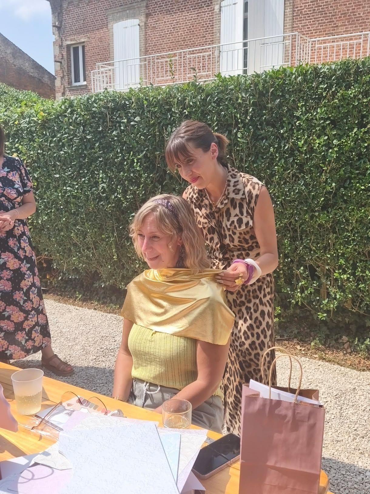
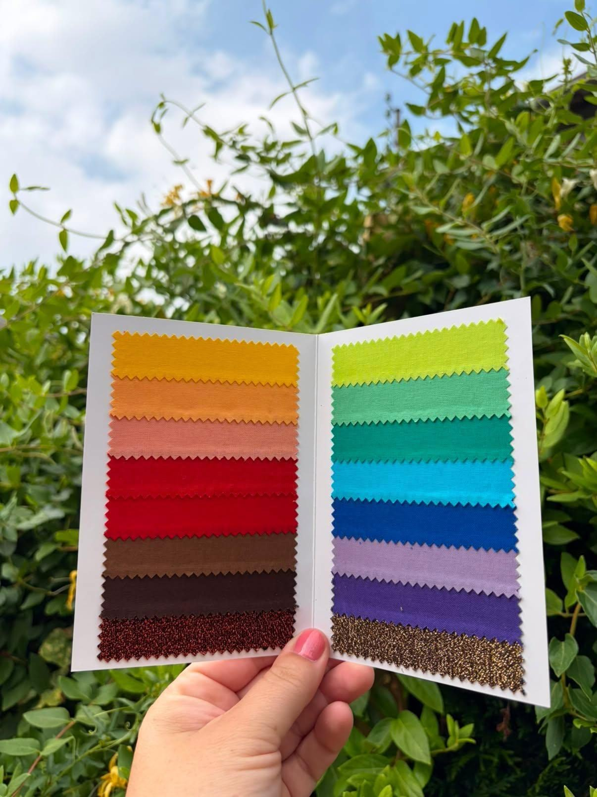
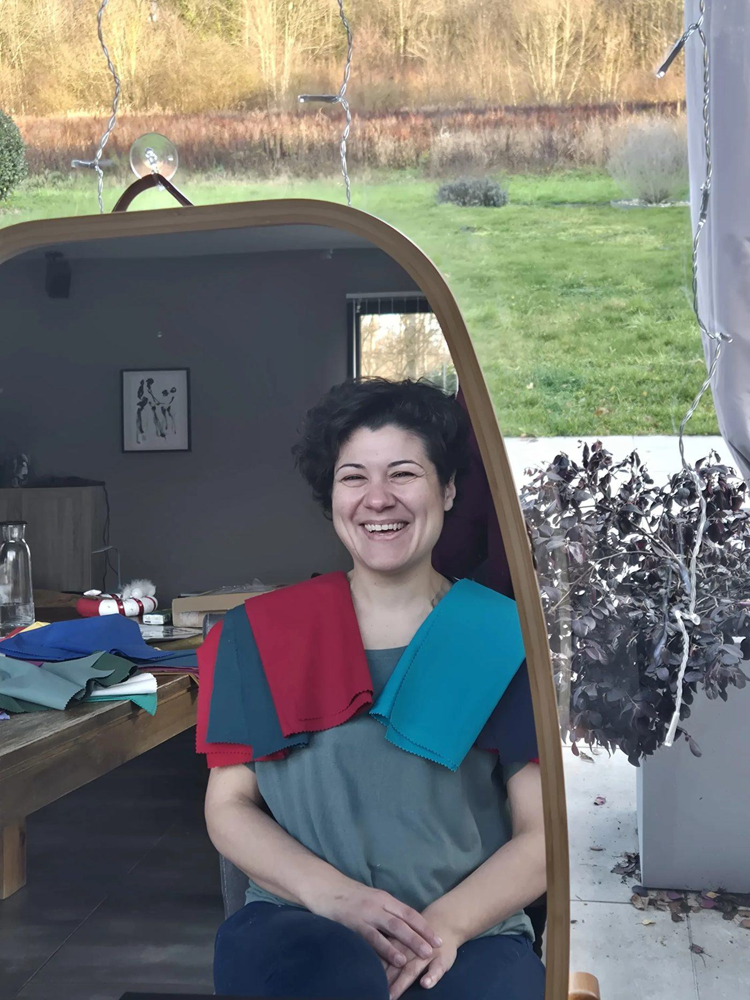
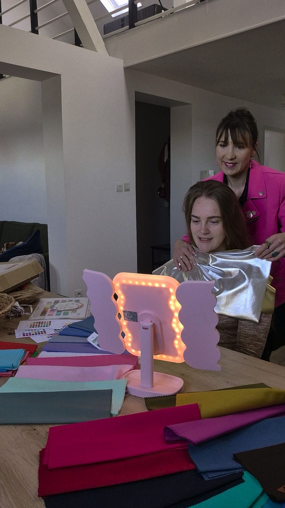

Colorimétrie
Et si les couleurs n'étaient pas là pour te transformer… mais pour révéler celle que tu es déjà ?

Il y a des matins où l'on ouvre son dressing avec cette impression étrange de n'avoir rien à se mettre.
Pas parce que les vêtements manquent.
Mais parce qu'aucun ne semble vraiment raconter qui l'on est.
Alors, par habitude, on choisit encore le noir.
Le beige.
Le gris.
Ces couleurs qui rassurent, qui passent partout, qui attirent peu le regard.
On finit parfois par se fondre dans le décor.
Non pas parce qu'on le souhaite.
Mais parce qu'on ne s'autorise plus vraiment à prendre sa place.

Ce que la colorimétrie n'est pas
La colorimétrie n'est pas une histoire de saisons. Ce n'est pas une étiquette. Ce n'est pas une liste de couleurs interdites. Et certainement pas une règle de plus à suivre.
Pour moi, la colorimétrie est une rencontre. Une façon de découvrir les couleurs qui dialoguent naturellement avec toi. Celles qui illuminent ton visage. Celles qui mettent en valeur ce qui est déjà là.
Plus que des couleurs…
Ce que je souhaite avant tout, c'est que tu repartes avec un regard différent sur toi-même. Que tu oses davantage. Que tu comprennes pourquoi certaines couleurs te donnent confiance, et pourquoi d'autres te fatiguent.
Et surtout, que tu cesses de choisir tes vêtements uniquement pour te faire discrète. Tu n'as pas besoin de te cacher. Tu peux rayonner sans renoncer à qui tu es.


Mon accompagnement
Nous prendrons le temps. Le temps d'observer. D'essayer. De comparer. De ressentir. Je répondrai à toutes tes questions et je t'expliquerai pourquoi certaines couleurs semblent naturellement faites pour toi.
À la fin de cette séance, tu repartiras avec des repères concrets. Mais surtout, avec davantage de liberté.
Parce que connaître ses couleurs n'est pas une finalité. C'est souvent le début d'une nouvelle façon de se regarder.
Une dernière chose…
Je ne crois pas qu'une couleur puisse changer une femme.
En revanche…
Je crois profondément qu'elle peut lui donner envie de se regarder autrement.
Et parfois… c'est là que tout commence.
Envie d'en discuter ?
Un premier échange suffit pour poser les bases, en douceur et sans engagement.